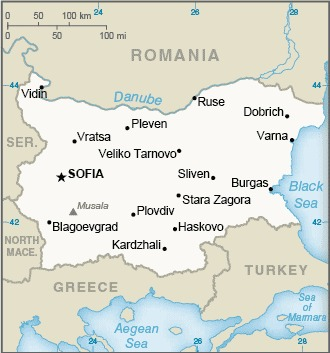

Genel Bilgiler
Bulgaristan, Güneydoğu Avrupa’da yer alan parlamenter bir cumhuriyettir. Başkenti Sofya’dır. Yaklaşık 6,9 milyon nüfusa sahiptir. Resmî dili Bulgarca’dır ve para birimi Bulgar Levası (BGN)’dır. Ülke Avrupa Birliği ve NATO üyesidir. Tarih boyunca Trakya, Roma ve Osmanlı gibi birçok medeniyete ev sahipliği yapmıştır.
Bulgaristan kuzeyde Romanya, doğuda Karadeniz, güneyde Türkiye ve Yunanistan, batıda Sırbistan ve Kuzey Makedonya ile sınır komşusudur. Yüzölçümü yaklaşık 110.994 km²’dir. Ülke dağlık ve ovalardan oluşur; en yüksek noktası 2.925 metre ile Rila Dağı’ndaki Musala Tepesi’dir. İklimi ılıman karasal ve Akdeniz iklimi karışımıdır.
Başkent: Sofya
Kıta: Avrupa
Yüzölçümü: 110.994 km²
Nüfus (2025): 6.900.000

Bayrak Anlamı: Bulgaristan bayrağı yatay üç eşit şeritten oluşur: beyaz, yeşil ve kırmızı. Beyaz barışı ve özgürlüğü, yeşil tarımı ve doğayı, kırmızı ise cesareti ve ulusal bağımsızlık mücadelesini simgeler. Bayrak ilk olarak 1879 yılında kabul edilmiştir ve günümüzde Bulgaristan’ın ulusal sembolüdür.
Bulgaristan Haritası
Ekonomi
Bulgaristan ekonomisi Avrupa’nın gelişmekte olan ekonomilerindendir. Tarım, sanayi ve hizmet sektörleri önemli rol oynar. Tarımda buğday, mısır, ayçiçeği ve sebze üretimi öne çıkar. Sanayi sektöründe enerji, metal işleme, kimya ve tekstil ürünleri üretilir. Hizmet sektörü özellikle turizm, finans ve IT alanlarında büyüktür. Ülke ayrıca Balkanlar’da stratejik bir enerji ve lojistik koridoru olarak önem taşır.
| Yıl | İhracat (Milyar $) | İthalat (Milyar $) |
|---|---|---|
| 2019 | 32 | 47 |
| 2020 | 28 | 42 |
| 2021 | 34 | 52 |
| 2022 | 36 | 55 |
| 2023 | 37 | 56 |